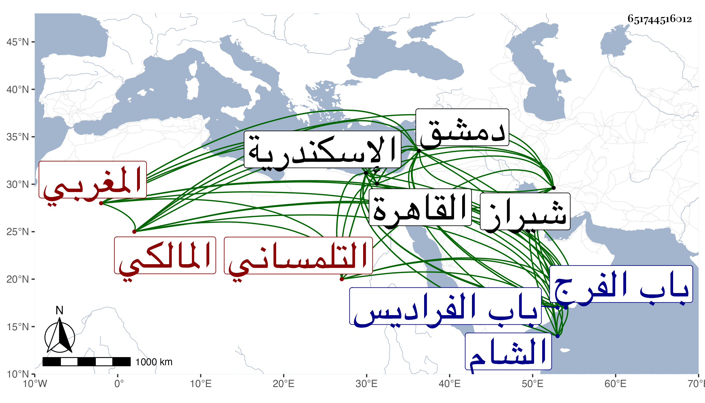

0902Sakhawi.DawLamic.ITO20230111-ara1.EIS1600.651744516012
Biography ID: 651744516012
أحمد بن سعيد بن محمد الشهاب أبو العباس التلمساني المغربي المالكي . ولي قضاء الاسكندرية ودمشق وطرق البلاد ودخل شيراز وشهد بها وفاة ابن الجزري وذلك في سنة ثلاث وثلاثين ، وعمر الدار والحمام داخل باب الفرج فلم يمتع بذلك إلا قليلا ، وهو ممن قرأ على شيخنا في صحيح مسلم وغيره وأثنى على مباشرته لقضاء الاسكندرية في ترجمة الجمال عبد الله بن الدماميني من تاريخه فإنه قال أنه استقر بعده وباشره متحفظا في مباشرته إلى أن شاعت سيرته المستحسنة وقد رأيته كثيرا بين يديه ، وولي قضاء الشام بعد وانفصل بابن عبد الوارث ثم أعيد ثم انفصل ، مات مصروفا في رابع ربيع الثاني سنة أربع وسبعين بدمشق وصلى عليه بالجامع ودفن بمقبرة باب الفراديس في الجهة الشرقية وكان قد قدم القاهرة قبل بيسير وحاول عود القضاء فما أمكن رحمه الله ، وكان فاضلا في الفقه والعربية وغيرهما .
